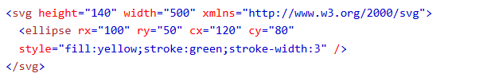

SVG Polygon - <polygon>

The ellipse element is used to create an ellipse. An ellipse is closely related to a circle. The difference is that an ellipse has an x and a y radius that differs from each other, while a circle has equal x and y radius. The ellipse element has four basic attributes to position and set the size of the ellipse:
